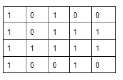
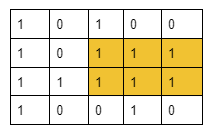

Input: matrix = [[1,0,1,0,0],[1,0,1,1,1],[1,1,1,1,1],[1,0,0,1,0]]
Output: 6
Explanation: The highlighted part depicts the rectangle with the largest area i.e. 6

Example 2:
Input Format: matrix = [[1]]
Result: 1
Explanation: In this case, there is only one rectangle with area 1.
Disclaimer: Don't jump directly to the solution, try it out yourself first.
In the article, Area of largest rectangle in Histogram, we have learned how to figure out the area of the largest rectangle in a given histogram. Here, in order to solve this problem, we are going to use that approach.
In this problem, we are given a matrix with 0’s and 1’s. Consider the following example:
If we carefully observe, we can convert each row of the given matrix into a histogram. Let’s try it out with the first row: We can consider the first and third columns to be rectangles with height 1 and the rest to be rectangles with height 0. The histogram will look like the following: [1, 0, 1, 0, 0]
Similarly, if we try for the second row, we can observe the following: [2, 0, 2, 1, 1]
The first and third columns represent rectangles of height 2, the second column represents a rectangle of height 0 and the fourth and fifth columns represent rectangles of height 1. For the third row, it will be like [3, 1, 3, 2, 2] and for the fourth, it will be [4, 0, 0, 3, 0].
Similarly, following the same process, we can convert every row of any matrix into a histogram. Now, if we pass each histogram(i.e. Each row) to the function used in finding the Area of the largest rectangle in the Histogram, it will give us the maximum area for each histogram. Among all the answers to the histograms, we will consider the maximum one.
Intuition:
To get the histogram array for each row, we will use a height array of size m(m = no. of columns of the matrix). This array will primarily store 0’s and the ith index will represent the ith column of the matrix. Now, we will iterate every column of each row and if any column contains 1, we will increase the value of that column index by 1 in the height array(i.e. height[col]++). Otherwise, we will set 0 to the indices of the height array. Thus we will get the histogram array for each row. Then, for each row, we will calculate the maximum area.
Approach:
Pre-requisite function: largestRectangleArea(). Returns the area of the largest rectangle of a histogram. To know the implementation of the function, refer to the article: Area of largest rectangle in Histogram
The algorithm steps are as follows:
Declare a height array of size m(where m = no. of columns of the matrix).
Now, we will run a loop to visit all the rows of the matrix.
Now inside the loop, for each row, iterate over every column, and if a cell contains 1 we will increase the value of the column index by 1 in the height array i.e. height[col]++. But if the cell contains 0, we will set 0 for that column index in the height array.
Once every cell gets visited, we will pass the height array i.e. the histogram array to the largestRectangleArea() function and store the maximum area for the row.
Now, among all the areas calculated for all rows, we will keep the maximum one as our answer.
Note: If you wish to see the dry run of the above approach, you can watch the video attached to this article.
Code:
#include <bits/stdc++.h>
using namespace std;
int largestRectangleArea(vector < int > & histo) {
stack < int > st;
int maxA = 0;
int n = histo.size();
for (int i = 0; i <= n; i++) {
while (!st.empty() && (i == n || histo[st.top()] >= histo[i])) {
int height = histo[st.top()];
st.pop();
int width;
if (st.empty())
width = i;
else
width = i - st.top() - 1;
maxA = max(maxA, width * height);
}
st.push(i);
}
return maxA;
}
int maximalAreaOfSubMatrixOfAll1(vector<vector<int>> &mat, int n, int m) {
// Write your code here.
int maxArea = 0;
vector<int> height(m, 0);
for (int i = 0; i < n; i++) {
for (int j = 0; j < m; j++) {
if (mat[i][j] == 1) height[j]++;
else height[j] = 0;
}
int area = largestRectangleArea(height);
maxArea = max(maxArea, area);
}
return maxArea;
}
int main() {
vector<vector<int>> mat = {
{1, 0, 1, 0, 0}, {1, 0, 1, 1, 1},
{1, 1, 1, 1, 1}, {1, 0, 0, 1, 0}
};
int n = 4, m = 5;
int maxArea = maximalAreaOfSubMatrixOfAll1(mat, n, m);
cout << "The maximum are is: " << maxArea << "\n";
return 0;
}
Output: The maximum area is: 6 (For example 1)
Time Complexity: O(N * (M+M)), where N = total no. of rows and M = total no. of columns. Reason: O(N) for running a loop to check all rows. Now, inside that loop, O(M) is for visiting all the columns, and another O(M) is for the function we are using. The function takes linear time complexity. Here, the size of the height array is M, so it will take O(M).
Space Complexity: O(M), where M = total no. of columns. Reason: We are using a height array and a stack of size M.
Special thanks to KRITIDIPTA GHOSH for contributing to this article on takeUforward. If you also wish to share your knowledge with the takeUforward fam, please check out this article. If you want to suggest any improvement/correction in this article please mail us at write4tuf@gmail.com